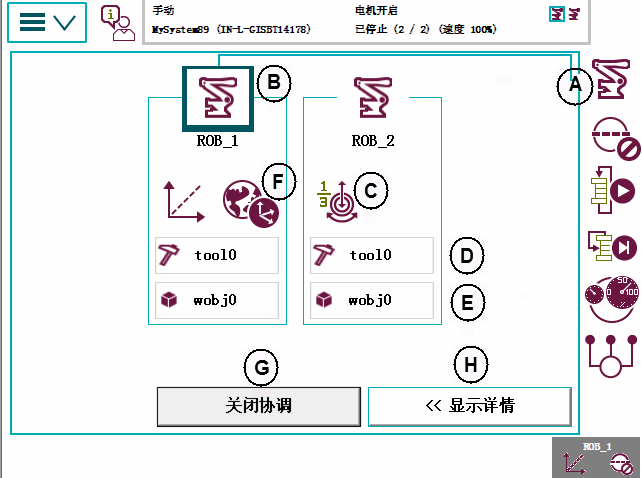
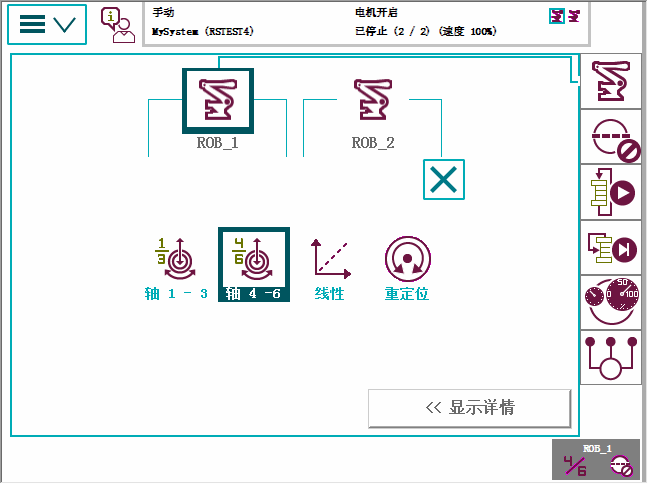
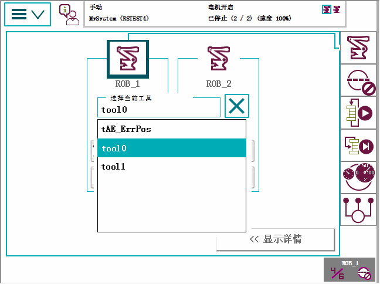
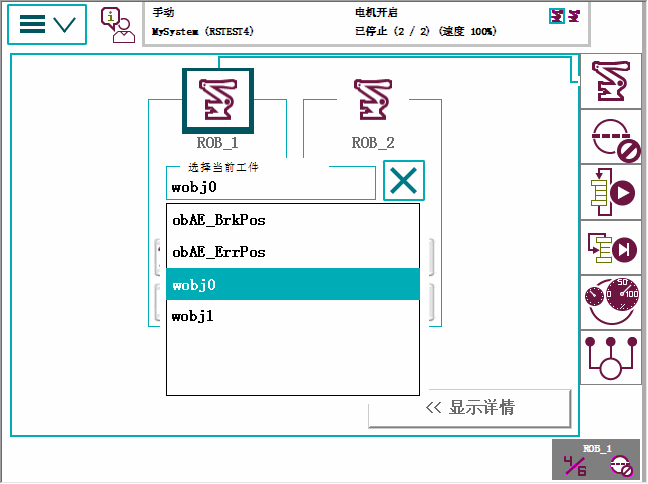
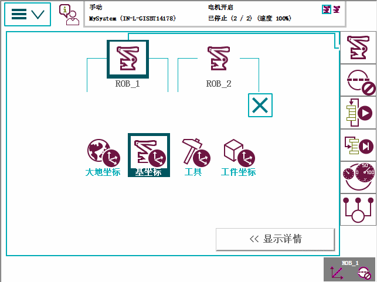
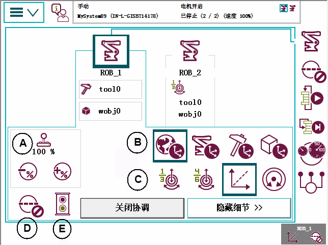

在 Quickset（快速设置）菜单中，点击 Mechanical unit（机械装置），然后点击选择一个机械装置。

A | 机械单元菜单按钮 |
B | 机械单元，将突出显示选中的单元。请参见选择机械单元进行微动控制。 |
C | 有关运动模式设置（当前选定轴 1-3 运动模式）及更多设置的说明，请参阅动作模式设置图示。 |
D | 有关工具设置（当前选定工具 0）及更多设置的说明，请参见工具设置图示。 |
E | 有关工件设置（当前选定工件 0）及更多设置的说明，请参见工件设置图示。 |
F | 有关坐标系设置（当前选定大地坐标）及更多设置的说明，请参见坐标系设置图示。 |
G | 有关协调及更多设置的说明，请参见关闭协调。 |
H | Show details（显示详细信息），更多设置的说明，请参阅Show Details（显示细节）图示。 |
 | 注意 仅在手动模式下才可使用“机械单元”菜单。 |
要查看或更改任何动作模式功能，请点击 Motion mode（动作模式）设置按钮。微动控制窗口中也有这些设置，请参阅选择动作模式 。

选择动作模式设置：
轴 1-3
轴 4-6
线性
重定向
要查看或更改可用工具，请点击 Tool（工具）设置按钮。微动控制窗口中也有这些设置，请参阅选择工具、工件和有效载荷 。

要查看或更改可用工件，请点击 Work object（工件）设置按钮。微动控制窗口中也有这些设置，请参阅选择工具、工件和有效载荷 。

选择要使用的工件。
要查看或更改坐标系功能，请点击 Coordinate system（坐标系）设置按钮。微动控制窗口中也有这些设置，请参阅选择坐标系。

选择坐标系设置：
大地坐标系
基坐标系
工具坐标系
工件坐标系
点击 Show Details（显示细节）显示可用于机械装置的设置。

A | 超驰微动控制速度设置（当前选定 100%) |
B | 坐标系统设置 |
C | 运动模式设置 |
D | 打开或关闭用户增量 |
E | 打开或关闭微动控制监控 |
如果有任何设置不可用，就会跳过该设置。
运动模式和坐标设置可通过点击相应按钮进行更改。
点击 Hide Details（隐藏细节）返回至基本显示。
要在协调和非协调微动控制之间快速更改，使用关闭协调按钮。
在您作出任何影响协调的更改（例如，协调的机械单元的工件或坐标系）情况时，该按钮自动隐藏。
要重新启用该按钮，必须再次手动设置协调。
关于在 MultiMove 机器人指尖进行协调的信息，请参阅应用手册 - MultiMove。